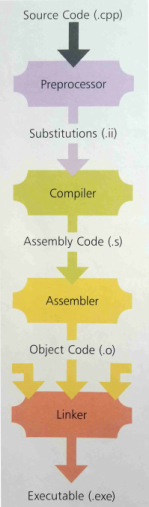

#About compilation
Compiler Directives
-
#include
,
#define
,
#ifdef
etc.
When the C++ compiler runs, it first calls on the
preprocessor to find any compiler directives that are included in the source code - anything starting with a
#The changes made by compiler directives (
#include etc.) create new temporary files for use during compilation.
These temporary files are what's used to create a binary:
Substitutions<file>
.ii - Replaces the compiler directives (#include) in the source code with library code that implements those directives
Assembly Code<file>
.s - Translation of the expanded .ii file into low-level Assembly language instructions
Object Code<file>
.o - Translation of the Assembly .s file into machine code (1s and 0s)
A linker then coverts 1 or more binary objects in an executable
.exeSave the temp filesYou can save the temp files when compiling by using
-save-tempsc++ prog.cpp -o prog -save-tempsObject file but no .exeUse
-c to compile the program's source files into an object but with no .exe
c++ prog.cpp -save-temps -c